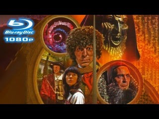
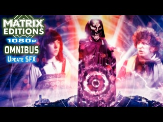
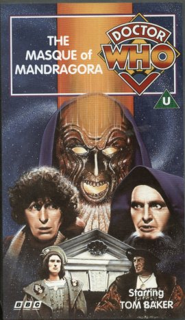
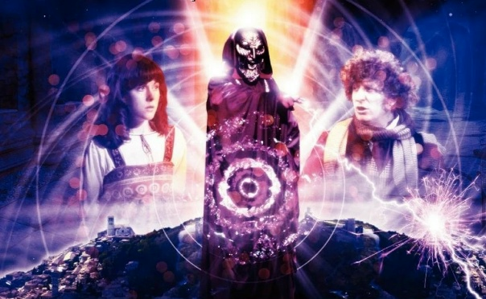
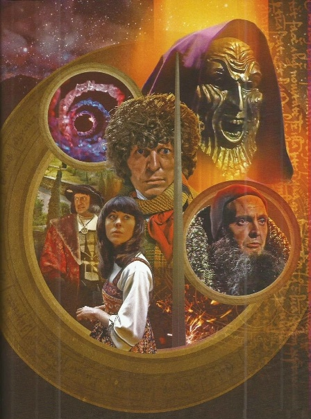

Субтитры: Русские и Английские |  |
|---|---|
с обновлением визуальных эффектов (cunningmunki) Субтитры: отсутствуют |  |
Субтитры: отсутствуют |
The Masque of Mandragora
Дата выхода: 4-25 сентября 1976
Формат: 4 эпизода по 25 мин.
|
ТАРДИС материализуется в Италии XV века, где политические интриги дворов и суеверия народа создают благодатную почву для чужеродной силы. Мандрагора Геликс — разумная сущность из космоса — проникает в человеческие умы через культ почитателей древнего божества, питаясь страхом и невежеством. Доктор и Сара Джейн оказываются в самом сердце ренессансного Сан‑Мартино, где наука ещё только пробуждается, а тьма суеверий грозит поглотить разум целого города. Костюмная историческая фантастика с готическим налётом, в которой научное мышление сталкивается с мистификацией и манипуляцией толпой.
 VHS - август 1991 | DVD - 8 февраля 2010 |  Blu-ray - 4 мая 2020 * Версия в нашей группе |
|---|

